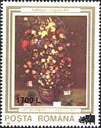
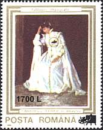
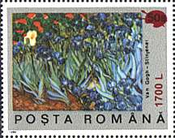
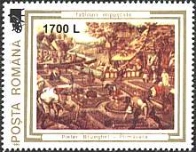
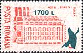
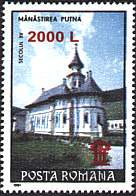
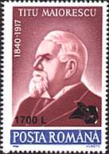

INFLATION AND DEFLATION AFTER THE W.W.II
AS SHOWN BY THE SURCHARGED ROMANIAN STAMPS
Year 2000
The Romanian people, sick and tired of 45 years of an oppressive regime and of the of the one party communist dictatorship upraised against and deposed the regime in December 1989. This started a new era in the tormented history of Romania, that of the reconstruction of the country after the long communist experiment.
 |
 |
This reconstruction was and continues to be a very difficult process, for reasons whose full explanation goes beyond the goal of this presentation. One consequence of the difficult recovery from a entirely nationalized economy and from the mismanagement that followed is the high rate of monetary inflation in Romania.
 |
 |
Considering that the last stamp of Lei 0.55, the standard fee for a domestic letter during many years, was issued in 1982 and that the today's fee for the same service is of Lei 1750 (as shown on any of the stamp shown above), we infer that between 1982 and 2000 the mean annual inflation rate for postal services was of 17,600%. Actually it was much lower till 1991 and much higher after that year.
The official inflation rate between December 1998 and December 1999 was of 54.8%. The announced goal of the Romanian government for the year 2000 was to limit the inflation to 45%. Presently it negotiates with the IMF a new figure, that of 55%.
 |
 |
The fee for a postcard sent from Romania to Switzerland is currently (September 2000) Lei 7,000. The fee for a letter sent from Romania to Switzerland is currently Lei 12,300. The readers should take into consideration that the Net Medium Wage was in 1999 of only US$ 95.00 and is not better today, the exchange rate being roughly at Lei 24,000 for an US$. As result, a fee of Lei 12'300 for an abroad letter has a different meaning for a Romanian citizen than for one of a Western country, who eventually pays comparable amount in his currency. The high inflation rate has for sure only aggravated the situation.
 |
Please notice the face value of Lei 34,000 on the stamp above, the first from the right and compare this value with the value of Lei 36,000 on the stamp (here overprinted CBA and with a new face value), issued in March 1947, Sc. 650, Mi. 1031 (shown above on the left). In the AD 2000 the Romanian citizens experience the same inflationary situation that their grandfathers and fathers experienced a half of a century ago. A really paradoxical and rather tragic evolution!
 |
 |
From the philatelic point of view these issues are quite interesting. The designers of the overprinted stamps have innovated by covering the old values by all kind of images, "forcing" in this way the original stamps to be classified as pertaining to new topics. One can find easels, books, flowers, birds, dirigibles, trees and many others. As usually in such situation there were pointed out reversed surcharges. Nobody knows what will be invented in the next years and how many other overprinted stamps will be printed. A special characteristic of these issues is that the Romania post doesn't accompany the overprinted issues with FDCs, letting us guess the exact date of issue.
Links:
-
Inflation (Introduction) and the Five Year Plan
Click the above banner to visit the site